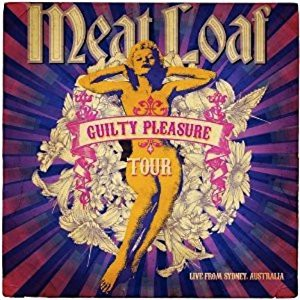

#6985 Meat Loaf - Guilty Pleasure Tour
 
 IMDB-Wertung: 0.0 / 10
IMDB-Wertung: 0.0 / 10  Metascore: 0
Metascore: 0 
1. Hot Patootie / Time Warp
2. If It Ain’t Broke, Break It
3. Bat Out Of Hell
4. Peace On Earth
5. Living On The Outside
6. Los Angeloser
7. You Took The Words
8. Rock And Roll Dreams
9. Stand In The Storm
10. Anything For Love
11. Two Out Of Three Ain’t Bad
12. Paradise By The Dashboard Light
13. Boneyard / All Revved Up
Jahr: 2011
Dauer: 61 Minuten
FSK: 0
Land: Studio: Tonspuren:
Untertitel:
Auflösung: SD (720x576) Größe: 3788 MB
Genre: Musik
Regisseur:
Drehbuch:
Soundtrack:
Darsteller:
Datei: X:\Musik\Meat Loaf - Guilty Pleasure Tour (2011, FSK0, 720x576).mkv seit 15.09.2017
Festplatte: HD Serien(SU-Z)+Dokus+Musik
 Es gibt insgesamt 134 Filme in der Gruppe 'Musik'
Es gibt insgesamt 134 Filme in der Gruppe 'Musik'